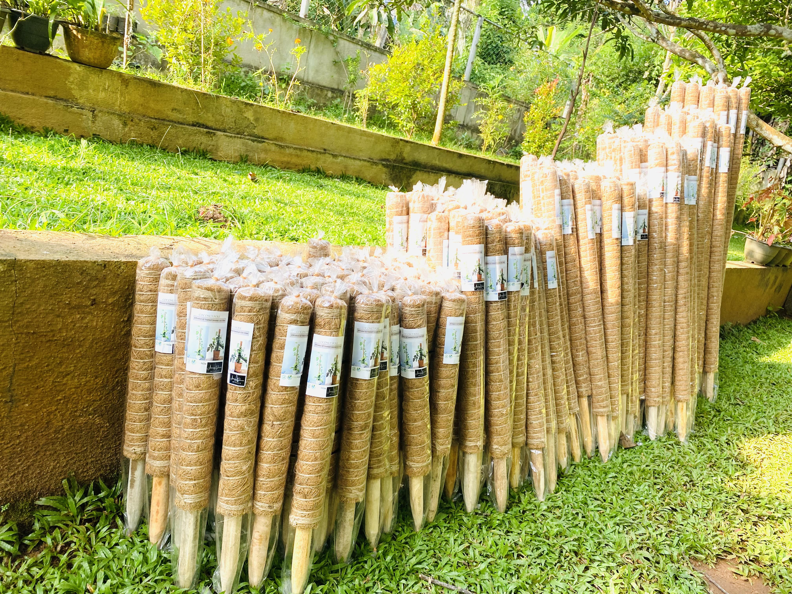

Manufacturing with Nature
Amazing Decora began with a simple mission: to provide plant enthusiasts with high-quality, sustainable alternatives to plastic plant supports. We realized that the best way to support nature is with nature itself.
Our coconut coir is sourced from sustainable coconut farms where the husks are a byproduct of the food industry. Instead of letting them go to waste, we process them into durable, moisture-retaining fiber that is perfect for gardening.
Every pole is hand-wrapped, ensuring tight adhesion and minimizing shedding. Our wooden structures are crafted from responsibly harvested timber, treated with natural oils to resist moisture without leaching harmful chemicals into your soil.
Why Choose Us?
Sustainable Materials
We use coconut fiber and responsible wood resources.
Handmade Quality
Strict quality control ensures every product meets our high standards.
Plant Health Focus
Designed by horticulturists to promote actual root attachment and growth.
Supporting Local
We support local artisans and coconut farmers through fair trade practices.